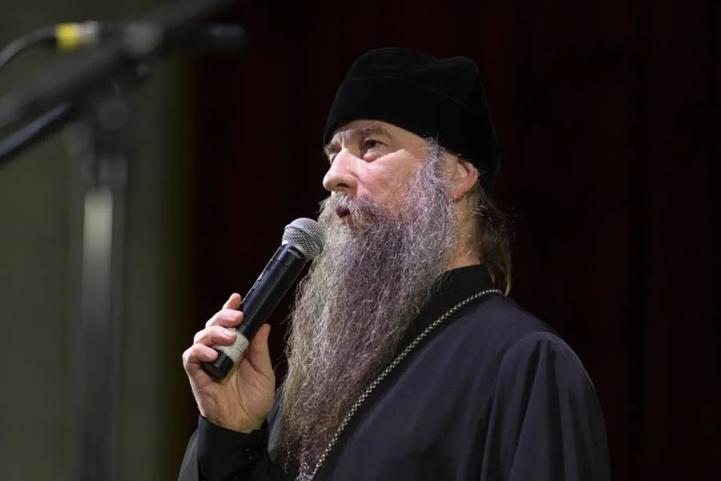

6–8 ноября 2026 года вся страна — от пятиклассников до людей солидного возраста — ответит на вопросы об истории, культуре и единстве народов России. Присоединяйтесь: это 40 минут, которые объединяют.
онлайн с любого устройства40 минут · до 30 балловсертификат каждому
6–8 ноября 2026

все 89 регионов
До начала Всероссийского гражданско-патриотического диктанта осталось:
Старт — 6 ноября 2026 года в 10:00 по московскому времени
0дней
00часов
00минут
00секунд
ИсторияКультураГод единства народов РоссииПравоГражданская идентичностьРелигии6–8 ноября 2026
01О диктанте
Один день — и вся страна отвечает на вопросы о России
Цель диктанта — укрепление гражданского мира и согласия в России, а также единства народов нашей страны на основе общероссийской гражданской идентичности.
V сезонпроводится ежегодно с 2022 года
0участников написали диктант в 2025 году
0регионов России — от Калининграда до Камчатки
02Задачи проекта
Зачем стране диктант
Диктант — не проверка «на оценку», а масштабное исследование того, какие ценности живут в каждом из нас, и общий разговор о будущем России.
01
Выявление усвоенного и реализуемого молодёжью в повседневной жизни набора ценностных ориентаций
02
Поддержка государственной политики в сфере воспитания и обучения
03
Разработка предложений по практической реализации Стратегии развития системы воспитания и Стратегии национальной безопасности РФ
04
Сохранение и укрепление традиционных духовно-нравственных ценностей
05
Недопущение фальсификации исторических событий и сохранение памяти о значимых достижениях российского государства с его многовековой историей
06
Формирование в молодёжном сознании общественно-значимых ориентиров развития российского общества
03Обращения
Слова, с которыми мы начинаем
«
Мы должны сделать все, чтобы сегодняшние дети и вообще все наши граждане гордились тем, что они наследники, внуки, правнуки победителей. Знали героев своей страны и своей семьи, чтобы все понимали, что это часть нашей жизни.
В. В. ПутинПрезидент Российской Федерации«
Гражданско-патриотический диктант — не просто интеллектуальное испытание. Это возможность вместе вспомнить нашу героическую историю, обратиться к духовным истокам и почувствовать себя частью большой общности. Мы создаём будущее страны, где чувство личной ответственности и гражданская солидарность становятся настоящей силой, объединяющей народ.
А. Г. КомиссаровРектор Президентской академии«
Сейчас — время сосредоточения и возрождения тех главных нравственных и духовных традиций, которые наши предки выработали за столетия. Наш долг — сохранять и преумножать этот опыт. Благословляю всех участников и желаю успеха в этом значимом деле.
Епископ Сергиево-Посадский и Дмитровский КириллРектор Московской духовной академии, президент НОТА
04Диктант в разрезе 4 сезонов
Растём вместе со страной
Каждый год диктант пишет всё больше людей — а география проекта уже достигла всех субъектов Российской Федерации.
Участникичеловек за сезон
0тысяч в 2025 году
Географиярегионов России
0регионов — вся страна
382022
802023
892024
892025
Базовые площадкиколичество
0площадок в 2025 году
122022
452023
532024
682025
05Для кого
Диктант — для всех. Правда, для всех
Вопросы адаптированы под три возрастные категории — каждому будет интересно и по силам.
Школьники 5–11 классов
Свой вариант вопросов: об основных событиях истории, героях, культуре и праздниках народов России.
от 11 лет
Студенты вузов и СПО
Коллективное участие всей группой или вузом — студенческие варианты глубже и острее.
вузы · колледжи
Взрослые и пенсионеры
Личное участие из дома, с работы или с базовой площадки. Крупные кнопки и спокойный темп — удобно с любого устройства.
без ограничений
06Информация о диктанте
Как всё устроено
Содержание Диктанта в 2026 году структурировано по шести тематическим блокам — от истории до гражданской идентичности.
Тематические блоки 2026 года
Из них состоит каждый вариант диктанта
ИсторияКультураГод единства народов РоссииПравоГражданская идентичностьРелигии
ежегоднодиктант проводится каждый год
30максимальное количество баллов
40 минна прохождение теста
Баллы — на почте
именной PDF
Каждый участник получит итоговый сертификат
С именем, возрастной категорией и набранными баллами — приходит на почту сразу после регистрации результатов.
07Награды
Призы абсолютным победителям
Максимальные 30 баллов — и вы среди победителей сезона.
награда
Диплом
Официальный диплом абсолютного победителя Всероссийского гражданско-патриотического диктанта.
приглашение
Награждение в Президентской академии
Приглашение на торжественную церемонию награждения в Президентскую академию с экскурсией по её историческому кампусу.
мерч
Набор мерча
Фирменный набор сувенирной продукции проекта — памятные вещи, которые приятно использовать каждый день.
Аширов Денис ВалерьевичЗаместитель руководителя Федерального агентства по делам молодёжи
Баринов Игорь ВячеславовичРуководитель Федерального агентства по делам национальностей
Бойко Сергей НиколаевичГерой Российской Федерации, директор Департамента государственной молодёжной политики и воспитательной деятельности Минобрнауки
Занко Ольга НиколаевнаЗаместитель председателя Комитета Государственной Думы по развитию гражданского общества, вопросам общественных и религиозных объединений
Захарова Мария ВладимировнаДиректор Департамента информации и печати МИД РФ
Конева Наталия ИвановнаПрезидент Фонда памяти полководцев Победы, дочь дважды Героя Советского Союза Маршала Советского Союза Ивана Конева
Кузнецов Михаил МихайловичРуководитель исполкома «Народный фронт “За Россию”»
Никитин Андрей СергеевичМинистр транспорта Российской Федерации, экс-губернатор Новгородской области
Петрова Ольга ВикторовнаЗаместитель Министра науки и высшего образования Российской Федерации
Святенко Инна ЮрьевнаЗаместитель Председателя Совета Федерации
Споняков Илья ДмитриевичГерой Российской Федерации, советник Министра культуры Российской Федерации
Степыко Дмитрий ГеннадьевичЗаместитель директора ФГБУ «Роспатриотцентр»
Шиц Иван АлександровичГерой Российской Федерации, председатель Совета общественного движения участников специальной военной операции «Войсковое братство “СВОи”»
10Медиа диктанта
Как это было в прошлые сезоны
Торжественные открытия, гимн в исполнении почётного караула и тысячи людей, которые в одну минуту берут в руки телефоны и начинают вспоминать историю.
Вы можете проверить свои знания, выразить свою гражданскую позицию и внести личный вклад в сохранение культурного и исторического наследия страны.
Принять участие могут все желающие старше 11 лет, в том числе из-за рубежа.
Диктант начнётся 6 ноября в 10:00 по московскому времени и будет доступен для прохождения до 23:59 по московскому времени 8 ноября.
Все необходимые материалы собраны в специальном разделе для подготовки — видеолекции, статьи и тренировочные тесты.
Сертификат/диплом направляется всем, кто полностью и верно заполнил регистрационную форму после прохождения. Если вы всё сделали правильно, проверьте папки «спам», «неразобранные рассылки» или «нежелательная почта». Если там нет документа, обратитесь на электронную почту diktant-russia@ranepa.ru.
13Контакты
Остались вопросы? Мы рядом
Почта организационного комитета
Пишите — отвечаем в рабочие дни. Перед письмом загляните в блок «Вопросы и ответы»: возможно, ответ уже там.


 В. В. Путин
Президент Российской Федерации
В. В. Путин
Президент Российской Федерации
 А. Г. Комиссаров
Ректор Президентской академии
А. Г. Комиссаров
Ректор Президентской академии
 Епископ Сергиево-Посадский и Дмитровский Кирилл
Ректор Московской духовной академии, президент НОТА
Епископ Сергиево-Посадский и Дмитровский Кирилл
Ректор Московской духовной академии, президент НОТА
 именной
именной
 Аширов Денис ВалерьевичЗаместитель руководителя Федерального агентства по делам молодёжи
Аширов Денис ВалерьевичЗаместитель руководителя Федерального агентства по делам молодёжи Баринов Игорь ВячеславовичРуководитель Федерального агентства по делам национальностей
Баринов Игорь ВячеславовичРуководитель Федерального агентства по делам национальностей Бойко Сергей НиколаевичГерой Российской Федерации, директор Департамента государственной молодёжной политики и воспитательной деятельности Минобрнауки
Бойко Сергей НиколаевичГерой Российской Федерации, директор Департамента государственной молодёжной политики и воспитательной деятельности Минобрнауки Занко Ольга НиколаевнаЗаместитель председателя Комитета Государственной Думы по развитию гражданского общества, вопросам общественных и религиозных объединений
Занко Ольга НиколаевнаЗаместитель председателя Комитета Государственной Думы по развитию гражданского общества, вопросам общественных и религиозных объединений Захарова Мария ВладимировнаДиректор Департамента информации и печати МИД РФ
Захарова Мария ВладимировнаДиректор Департамента информации и печати МИД РФ Конева Наталия ИвановнаПрезидент Фонда памяти полководцев Победы, дочь дважды Героя Советского Союза Маршала Советского Союза Ивана Конева
Конева Наталия ИвановнаПрезидент Фонда памяти полководцев Победы, дочь дважды Героя Советского Союза Маршала Советского Союза Ивана Конева Кузнецов Михаил МихайловичРуководитель исполкома «Народный фронт “За Россию”»
Кузнецов Михаил МихайловичРуководитель исполкома «Народный фронт “За Россию”» Никитин Андрей СергеевичМинистр транспорта Российской Федерации, экс-губернатор Новгородской области
Никитин Андрей СергеевичМинистр транспорта Российской Федерации, экс-губернатор Новгородской области Петрова Ольга ВикторовнаЗаместитель Министра науки и высшего образования Российской Федерации
Петрова Ольга ВикторовнаЗаместитель Министра науки и высшего образования Российской Федерации Святенко Инна ЮрьевнаЗаместитель Председателя Совета Федерации
Святенко Инна ЮрьевнаЗаместитель Председателя Совета Федерации Споняков Илья ДмитриевичГерой Российской Федерации, советник Министра культуры Российской Федерации
Споняков Илья ДмитриевичГерой Российской Федерации, советник Министра культуры Российской Федерации Степыко Дмитрий ГеннадьевичЗаместитель директора ФГБУ «Роспатриотцентр»
Степыко Дмитрий ГеннадьевичЗаместитель директора ФГБУ «Роспатриотцентр» Шиц Иван АлександровичГерой Российской Федерации, председатель Совета общественного движения участников специальной военной операции «Войсковое братство “СВОи”»
Шиц Иван АлександровичГерой Российской Федерации, председатель Совета общественного движения участников специальной военной операции «Войсковое братство “СВОи”»